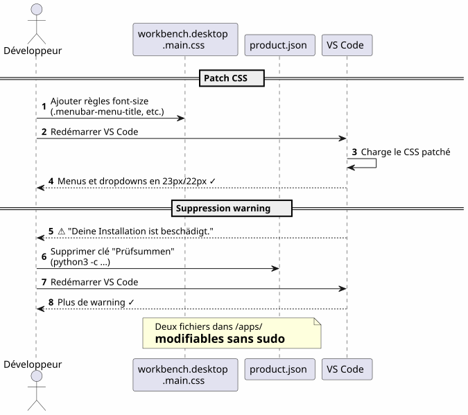

VS Code im Home: lokale Installation und Anpassung der Schriftarten ohne sudo
Publié le 17 April 2026
Warum VS Code installieren in`/opt`oder über`apt`wenn man es in seinem Home ablegen und seine IDE in einen Spielplatz verwandeln kann, ohne je zu tippen`sudo`? Hier ist die Geschichte einer lokalen Installation gefolgt von einem erbitterten Kampf, um die Schriftarten des Menüs und des Datei-Explorers zu vergrößern.
- Tik
-
[]
Übersicht des Parcours
Failed to generate image: PlantUML preprocessing failed: [From <input> (line 6) ]
@startuml
skinparam backgroundColor #FEFEFE
skinparam componentStyle rectangle
actor Développeur as dev
actor "opencode
^^^^^
Syntax Error? (Assumed diagram type: sequence)
@startuml
skinparam backgroundColor #FEFEFE
skinparam componentStyle rectangle
actor Développeur as dev
actor "opencode
+ LLM" as agent
package "Home Benutzer (~)" #LightGreen {
package "~/apps/" {
component "VS Code\n(tarball)" as vscode #SkyBlue
component "vscode-update.sh" as script #LightYellow
}
package "~/.config/Code/" {
component "settings.json" as settings #Lavender
}
package "~/.vscode-custom-css/" {
component "custom.css\n(zoom: 1.25)" as customcss #Lavender
}
}
cloud "code.visualstudio.com" as download
dev --> vscode : Télécharge & installe
dev --> script : Lance mise à jour
script --> download : wget dernière version
script --> vscode : Remplace + re-patch CSS
agent --> settings : Écrit config
agent --> customcss : Écrit zoom CSS
agent --> vscode : Patch workbench CSS
note right of vscode
Installation dans le home
= contrôle total sans sudo
end note
@enduml
Der Warum: VS Code im Home
Das Problem mit der Systeminstallation
VS Code installiert via`apt`, dnf`oder in/opt`sperrt die Anwendungsdateien hinter den Root-Rechten. Jegliche Änderung am nativen CSS, de`product.json`oder das Installationsverzeichnis erfordert`sudo`.
Aber, wenn man verwendetopencode(tool CLI zur Steuerung eines LLMs auf seinem Code), der Agent muss in der Lage sein:
-
In die Konfigurationsdateien schreiben`~/.config/Code/User/settings.json`) — das ist bereits im home
-
Die Assets des IDE ändern (CSS des Workbenches`product.json`) für die erweiterten Anpassungen — das ist ohne sudo gesperrt
Die Lösung: eine lokale Installation
Man lädt das offizielle Tarball-Archiv herunter und entpackt es direkt in`~/apps/`:
mkdir -p ~/apps
cd ~/apps
wget "https://code.visualstudio.com/sha/download?build=stable&os=linux-x64" -O vscode.tar.gz
tar -xzf vscode.tar.gz
rm vscode.tar.gzDie Binärdatei befindet sich dann in`~/apps/VSCode-linux-x64/bin/code`. keiner`sudo`ist nicht notwendig, um irgendeine Datei zu lesen, zu ändern oder zu ersetzen unter`~/apps/VSCode-linux-x64/`.
konkrete Vorteile
Failed to generate image: PlantUML preprocessing failed: [From <input> (line 5) ]
@startuml
skinparam backgroundColor #FEFEFE
rectangle "Installation System
(/opt, apt, dnf)" #LightCoral {
^^^^^
Syntax Error? (Assumed diagram type: activity)
@startuml
skinparam backgroundColor #FEFEFE
rectangle "Installation System
(/opt, apt, dnf)" #LightCoral {
card "VS Code Eigentum von root" {
[CSS du workbench : sudo requis]
[product.json : sudo requis]
[Dossier d'install : non modifiable]
}
}
rectangle "Installation Start
(~/apps)" #LightGreen {
card "VS Code Benutzereigenschaft" {
[CSS du workbench : libre]
[product.json : libre]
[Dossier d'install : libre]
[Script update maison]
}
}
"Installation System
(/opt, apt, dnf)" -right-> "Installation Start
(~/apps)" : **Non, merci**\nJe prends le home
note bottom of "Installation Start
(~/apps)"
L'agent opencode+LLM peut
modifier les fichiers de l'IDE
sans aucune élévation de privilèges
end note
@enduml
| Vorteil | Detail |
|---|---|
Kein sudo |
Alle Dateien der IDE gehören dem Benutzer |
Direkte Änderung des CSS |
Man kann patchen`workbench.desktop.main.css`ohne Erhöhung der Berechtigungen |
Internes Aktualisierungsskript |
Ein einfaches Shell-Skript lädt, ersetzt und patcht automatisch |
Isolierung |
Die Systeminstallation ist nicht verunreinigt; rollback = Löschen des Ordners |
Schriftart des Hauptmenüs anpassen
Die Feststellung
Die Standardschrift des Hauptmenüs (File, Edit, View…) und der Dropdowns ist zu klein. VS Code bietet keine Einstellung, um sie zu ändern.
Die Technik: Direktes CSS-Patch
Wir fügen CSS am Ende der Datei hinzu`workbench.desktop.main.css`</think>

CSS_FILE="$HOME/apps/VSCode-linux-x64/resources/app/out/vs/workbench/workbench.desktop.main.css"
cat >> "$CSS_FILE" << 'EOF'
.menubar-menu-title{font-size:23px!important}
.menubar>.menubar-menu-button{font-size:23px!important}
.monaco-menu-option{font-size:22px!important;line-height:34px!important}
.monaco-menu .action-label:not(.codicon){font-size:22px!important}
.menubar-menu-items-holder .monaco-menu .action-item .action-label{font-size:22px!important}
EOFDie Integritätswarnung löschen
VS Code erkennt Änderungen an seinen Dateien und zeigt ein Banner „Your installation is corrupt“ an. Um das zu vermeiden, löscht man die Prüfsummen von`product.json`:
import json
product_json = "$HOME/apps/VSCode-linux-x64/resources/app/product.json"
with open(product_json, 'r') as f:
data = json.load(f)
data.pop('checksums', None)
with open(product_json, 'w') as f:
json.dump(data, f, indent=2)Nach dem Neustart gibt es keine Warnungen mehr und die Menüs sind endlich lesbar.
Die Schriftart des Explorer-Bereichs anpassen — der Kampf
Tentative 1 : ein Parameter, der nicht existiert
Wir versuchen zunächst den nativen Parameter`workbench.tree.fontSize`in`settings.json` :
{
"workbench.tree.fontSize": 20
}Ergebnis:keine Wirkung. Dieser Parameter existiert nicht in VS Code. Der Beweis, dass nicht erkannte Parameter stillschweigend ignoriert werden.
Versuch 2: die Erweiterung Custom CSS and JS Loader
Man installiert die Erweiterung`be5invis.vscode-custom-css` :
~/apps/VSCode-linux-x64/bin/code --install-extension be5invis.vscode-custom-cssMan erstellt eine CSS-Datei in`~/.vscode-custom-css/custom.css`mit Selektoren, die die Elemente des Explorers ansprechen :
.monaco-tree-rows .monaco-tree-row,
.sidebar .monaco-list-row,
.explorer-viewlet .monaco-list-row,
.monaco-list-row .monaco-icon-label {
font-size: 22px !important;
line-height: 36px !important;
}Und wir referenzieren diese Datei in den Einstellungen :
{
"vscode_custom_css.imports": [
"file:///home/user/.vscode-custom-css/custom.css"
]
}Ergebnis:Die Änderungen gelten nicht..
Die Falle: Man muss die Erweiterung jedes Mal aktivieren
Die Dokumentation der Erweiterung ist an diesem entscheidenden Punkt unauffällig: Nach jeder Anpassung des Custom-CSS muss manunbedingtden Befehl aus der Palette ausführen:
-
Ctrl+Shift+P→ tippenBenutzerdefiniertes CSS und JS aktivieren -
VS Code demande un redémarrage → accepter
Ohne diesen Schritt wird das CSS niemals in die IDE eingefügt.
Versuch 3: Die Linien überlappen sich
Selbst mit`font-size: 22px` et line-height: 36px, die Buchstaben mit Schenkeln (g, p, f, b) ragen in die benachbarten Zeilen hinein. Es wird versucht, hinzuzufügen`height` et min-height:
.monaco-list-row {
height: 36px !important;
min-height: 36px !important;
}Ergebnis:keine Änderung. VS Code berechnet die Zeilenhöhen in JavaScript und überschreibt die CSS-Werte.
Die Lösung: zoom auf dem Elterncontainer
Failed to generate image: PlantUML preprocessing failed: [From <input> (line 5) ]
@startuml
skinparam backgroundColor #FEFEFE
rectangle "Versuch 1
Nicht vorhandener Parameter" #LightCoral {
^^^^^
Syntax Error? (Assumed diagram type: activity)
@startuml
skinparam backgroundColor #FEFEFE
rectangle "Versuch 1
Nicht vorhandener Parameter" #LightCoral {
card "workbench.tree.fontSize" as t1 {
[VS Code ignore le paramètre]
}
}
rectangle "Versuch 2
Benutzerdefiniertes CSS + Schriftgröße" #LightYellow {
card ".monaco-list-row { font-size: 22px }" as t2 {
[Texte plus grand\nmais lignes superposées]
}
}
rectangle "Versuch 3
Schriftgröße + Zeilenhöhe + Höhe" #LightYellow {
card "height: 36px !important" as t3 {
[VS Code override\npar JavaScript]
[Aucun effet]
}
}
rectangle "Lösung\nzoom auf übergeordneten Container" #LightGreen {
card ".monaco-list-rows { zoom: 1.25 }" as t4 {
[Texte + espacement\nproportionnels]
[Layout JS respecté]
[✓ Résultat conforme]
}
}
t1 -down-> t2 : Pas de paramètre ?\nOn essaie le CSS
t2 -down-> t3 : Lignes superposées ?\nOn force la hauteur
t3 -down-> t4 : Override JS ?\nOn utilise zoom
@enduml
Anstatt gegen das JavaScript-Layout zu kämpfen, verwendet man die Eigenschaft`zoom`auf dem Behälter der Zeilen:
.explorer-viewlet .monaco-list-rows,
.sidebar .monaco-list-rows {
zoom: 1.25;
}`zoom`vergrößert die Darstellung des Containers gleichmäßig — Text UND Abstand — ohne das vom JavaScript-Engine von VS Code berechnete Layout zu zerstören. Der Faktor 1.25 entspricht ungefähr einem Übergang von 13 px zu 16 px.
Ergebnis:Dateinamen endlich lesbar, Zeilenabstand korrekt.
Zusammenfassung der Selectors und was funktioniert
| Ansatz | CSS | Ergebnis |
|---|---|---|
|
|
Größerer Text, aber überlappende Zeilen |
|
|
Keine Wirkung (JS-Überschreibung) |
|
|
Erfolgreich — Text + proportionaler Abstand |
Das Skript für das automatische Update
Failed to generate image: PlantUML preprocessing failed: [From <input> (line 5) ]
@startuml
skinparam backgroundColor #FEFEFE
autonumber
actor "Entwickler
^^^^^
Syntax Error? (Assumed diagram type: sequence)
@startuml
skinparam backgroundColor #FEFEFE
autonumber
actor "Entwickler
oder cron" as dev
participant "vscode-update.sh" as script
participant "VS-Code-Tarball
(code.visualstudio.com)" as remote
participant "~/apps/
VSCode-linux-x64" as local
participant "~/apps/\nvscode-backup" as backup
participant "workbench
.desktop.main.css" as css
participant "product.json" as product
dev -> script : ./vscode-update.sh
script -> local : Lire version courante
script -> remote : wget dernière version
script -> script : Comparer versions
alt Version identique
script --> dev : "Bereits auf dem neuesten Stand!"
else Nouvelle version
script -> backup : Sauvegarder installation courante\n(horodatée)
script -> local : rm -rf ancienne installation
script -> local : mv nouvelle installation
script -> css : Ajouter patch CSS\n(menubar 23px, dropdown 22px)
script -> product : Supprimer checksums\n(python3)
script --> dev : "Update abgeschlossen
1.xx.yy → 1.zz.ww"
end note
@enduml
Das Problem
Wenn VS Code sich aktualisiert, ersetzt er den Installationsordner undlöscht alle CSS-Patches. Man muss die Änderungen jedes Mal manuell erneut anwenden.
Das Skript `vscode-update.sh
Man erstellt`~/apps/vscode-update.sh`:
#!/bin/bash
set -e
VSCODE_DIR="$HOME/apps/VSCode-linux-x64"
BACKUP_DIR="$HOME/apps/vscode-backup"
TEMP_DIR="/tmp/vscode-update"
MENUBAR_FONT_SIZE="23px"
DROPDOWN_FONT_SIZE="22px"
echo "=== VS Code Local Updater ==="
CURRENT_VERSION=$("$VSCODE_DIR/bin/code" --version 2>/dev/null | head -1)
echo "Current version: $CURRENT_VERSION"
echo "Downloading latest VS Code..."
mkdir -p "$TEMP_DIR"
wget -q "https://code.visualstudio.com/sha/download?build=stable&os=linux-x64" \
-O "$TEMP_DIR/vscode.tar.gz"
echo "Extracting..."
mkdir -p "$TEMP_DIR/extracted"
tar -xzf "$TEMP_DIR/vscode.tar.gz" -C "$TEMP_DIR/extracted"
NEW_VERSION=$("$TEMP_DIR/extracted/VSCode-linux-x64/bin/code" \
--version 2>/dev/null | head -1)
echo "New version: $NEW_VERSION"
if [ "$CURRENT_VERSION" = "$NEW_VERSION" ]; then
echo "Already up to date!"
rm -rf "$TEMP_DIR"
exit 0
fi
echo "Backing up current installation..."
mkdir -p "$BACKUP_DIR"
cp -r "$VSCODE_DIR" "$BACKUP_DIR/VSCode-linux-x64-$(date +%Y%m%d-%H%M%S)"
echo "Updating..."
rm -rf "$VSCODE_DIR"
mv "$TEMP_DIR/extracted/VSCode-linux-x64" "$VSCODE_DIR"
rm -rf "$TEMP_DIR"
CSS_FILE="$VSCODE_DIR/resources/app/out/vs/workbench/workbench.desktop.main.css"
echo "Re-applying custom CSS patch \
(menubar=${MENUBAR_FONT_SIZE}, dropdown=${DROPDOWN_FONT_SIZE})..."
cat >> "$CSS_FILE" << CSSEOF
.menubar-menu-title{font-size:${MENUBAR_FONT_SIZE}!important}\
.menubar>.menubar-menu-button{font-size:${MENUBAR_FONT_SIZE}!important}\
.monaco-menu-option{font-size:${DROPDOWN_FONT_SIZE}!important;\
line-height:34px!important}\
.monaco-menu .action-label:not(.codicon)\
{font-size:${DROPDOWN_FONT_SIZE}!important}\
.menubar-menu-items-holder .monaco-menu .action-item .action-label\
{font-size:${DROPDOWN_FONT_SIZE}!important}
CSSEOF
PRODUCT_JSON="$VSCODE_DIR/resources/app/product.json"
if [ -f "$PRODUCT_JSON" ]; then
echo "Removing checksums to prevent integrity warning..."
python3 -c "
import json
with open('$PRODUCT_JSON','r') as f: data=json.load(f)
data.pop('checksums', None)
with open('$PRODUCT_JSON','w') as f: json.dump(data,f,indent=2)
print('Done.')
"
fi
echo "=== Update complete: $CURRENT_VERSION -> $NEW_VERSION ==="Das Skript:
-
Lade die neueste stabile Version herunter
-
Überprüfe, ob die Version von der aktuellen abweicht.
-
Sichere die aktuelle Installation (zeitgestempelt) in`~/apps/vscode-backup/`
-
Ersetze den Installationsordner
-
Erneut anwendenDer CSS-Patch des Hauptmenüs
-
Entferne die Prüfsummen de `product.json`um die Integritätswarnung zu vermeiden
Hinweis: Die Anpassungen des Explorer‑Bereichs über die Custom CSS‑Erweiterung und die Datei`~/.vscode-custom-css/custom.css`Sie überleben die Updates, weil sie außerhalb des Installationsordners leben.
Betroffene Dateien – Überblick
Failed to generate image: PlantUML preprocessing failed: [From <input> (line 6) ]
@startuml
skinparam backgroundColor #FEFEFE
skinparam componentStyle rectangle
rectangle "Installation von VS Code
(~/apps/VSCode-linux-x64/)" #LightCoral {
^^^^^
Syntax Error? (Assumed diagram type: activity)
@startuml
skinparam backgroundColor #FEFEFE
skinparam componentStyle rectangle
rectangle "Installation von VS Code
(~/apps/VSCode-linux-x64/)" #LightCoral {
component "workbench.desktop
.main.css" as css #LightCoral
component "product.json" as product #LightCoral
component "binär
bin/code" as binary #LightCoral
}
rectangle "Benutzerkonfiguration
(~/.config/Code/)" #LightGreen {
component "settings.json" as settings #LightGreen
component "Erweiterungen/" as extensions #LightGreen
}
rectangle "Persistente Anpassung
(~/.vscode-custom-css/)" #SkyBlue {
component "custom.css
(zoom: 1.25)" as customcss #SkyBlue
}
rectangle "Automation
(~/apps/)" #LightYellow {
component "vscode-update.sh" as script #LightYellow
component "vscode-backup/" as backup #LightYellow
}
script ..> css : Re-patch après MAJ
script ..> product : Supprime checksums\naprès MAJ
settings --> customcss : Référence via\nvscode_custom_css.imports
extensions ..> css : Custom CSS Loader\ninjecte custom.css
note bottom of css
**Ne survit pas** aux mises à jour
Re-patché par le script
end note
note bottom of customcss
**Survit** aux mises à jour
Vit hors du dossier d'installation
end note
note bottom of settings
**Survit** aux mises à jour
Vit dans ~/.config/
end note
@enduml
| Weg | Rolle | Überlebt die Updates? |
|---|---|---|
|
Installation der IDE |
Nein (ersetzt) |
|
CSS des Workbench (Menü, Dropdowns) |
Nein (nachträglich vom Skript gepatcht) |
|
Checksummen der Integrität |
Nein (erneut gereinigt vom Skript) |
|
Automatisches Aktualisierungs‑Skript |
Ja |
|
Benutzereinstellungen (fontSize, custom CSS) |
Ja |
|
Benutzerdefiniertes CSS für den Explorer (Zoom) |
Ja |
Gelernte Lektionen
Failed to generate image: PlantUML preprocessing failed: [From <input> (line 8) ]
@startuml
skinparam backgroundColor #FEFEFE
skinparam defaultFontName sans-serif
skinparam ArrowColor #444444
rectangle "**Lokale Installation**\n im Home" as install #LightGreen {
card "Kein sudo
zum Ändern von CSS/config" as i1
^^^^^
Syntax Error? (Assumed diagram type: activity)
@startuml
skinparam backgroundColor #FEFEFE
skinparam defaultFontName sans-serif
skinparam ArrowColor #444444
rectangle "**Lokale Installation**\n im Home" as install #LightGreen {
card "Kein sudo
zum Ändern von CSS/config" as i1
card "opencode+LLM kann
alles ändern" as i2
card "Rollback = wiederherstellen
das zeitgestempelte Backup" as i3
}
rectangle "**CSS-Anpassung**
Zoom vs Schriftgröße" as css #LightYellow {
card "zoom > font-size
für Komponentenliste" as c1
card "Layout JS-Überschreibung
Höhe/Zeilenhöhe" as c2
card "Extension Custom CSS
erfordert Aktivierung
manuelle (Ctrl+Shift+P)" as c3
}
rectangle "**Automatisierung**\n Skript zur Aktualisierung" as auto #LightCoral {
card "CSS neu patchen
nach jedem Update" as a1
card "Checksummen löschen
product.json" as a2
card "Zeitgestempeltes Backup
vor Ersetzung" as a3
}
install -right-> css : ensuite
css -right-> auto : enfin
note top of install
Contrôle total sans élévation
de privilèges
end note
note top of auto
Sans script, chaque MAJ
efface les patches CSS
end note
@enduml
Installieren im home-Verzeichnis befreit alles
Eine lokale Installation in`~/apps`gibt vollständige Kontrolle über VS Code:
-
Kein`sudo`um das CSS oder die Konfiguration zu ändern
-
Der opencode+LLM-Agent kann in die Konfigurationsdateien und die Assets der IDE schreiben.
-
Einfacher Rollback: den zeitgestempelten Backup wiederherstellen
zoom` > font-size für die Komponenten list
VS Code steuert die Zeilenhöhe über JavaScript. Ändern`font-size`Da man die vom Layout-Engine zugewiesene Höhe nicht ändern kann, ergeben sich Texte, die überlaufen. Die Eigenschaft`zoom`Durch das Vergrößern des übergeordneten Containers wird alles proportional vergrößert und dieses Problem umgangen.
Die Erweiterung Custom CSS erfordert eine explizite Aktivierung
Das ist kein "set and forget"-Parameter. Jede Änderung an der benutzerdefinierten CSS-Datei erfordert das erneute Ausführen von "Enable Custom CSS and JS" über die Befehlspalette (Ctrl+Shift+P).
Ein Aktualisierungsskript ist unverzichtbar
Ohne Skript löscht jedes Update von VS Code die CSS-Patches des Workbench. Das Skript`vscode-update.sh`Automatisiert den Download, das Ersetzen, das Re‑Patching und das Bereinigen der Prüfsummen.
Schnelle Referenzen
-
VS Code-Download: https://code.visualstudio.com/Download
-
Erweiterung Benutzerdefinierter CSS- und JS-Loader :`be5invis.vscode-custom-css`
-
Problem bei VS Code: Anforderung eines nativen Parameters für die Schriftart des Explorers :https://github.com/microsoft/vscode/issues/149[github.com/microsoft/vscode#149]